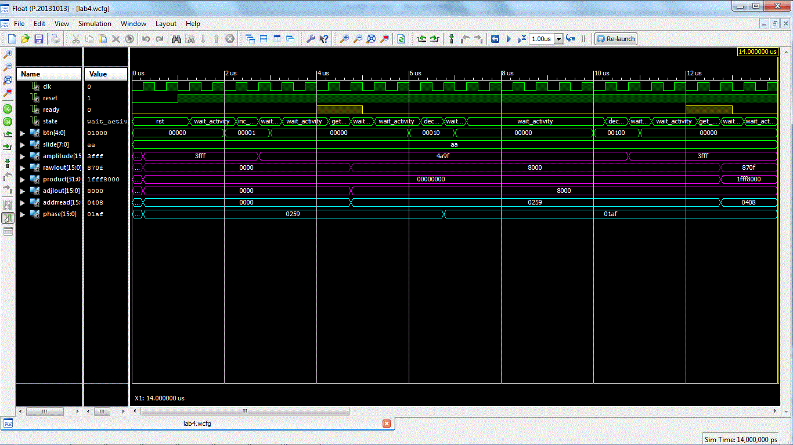

| Start date: | March 22 |
| End date: | April 4 |
| Lab: | 4 |
| Status | Complete
|
Lab 4 - Function generation
The goal of this lab is to generate an audio waveform with a high degree
of accuracy in both its period and frequency.
First Step of Lab
The first thing to do is create a Bitbucket repo for this lab with a README file (can be in markdown, word, pdf, etc) which includes the Milestone Table shown in the README section below. You should update this as you achieve each milestone. Your instructor will go to this table first when grading each of your milestones, looking for evidence that the milestone was achieved.
Lab Overview
You are to use Direct Digital Synthesis to reproduce your audio waveform. For required functionality your system should create a sinusoid.
For B-Level functionality, you must create a different waveform on the other channel.
You may choose any waveform so long as its not
Piecewise Linear.
A few interesting examples would be the sinc function, exponentially damped
sinusoids, or a waveform from a musical instrument (guitar, piano, or clarinet). It is
your responsibility to get the samples for this waveform. I would suggest
either deriving the waveform using a program like Python, using a spreadsheet, or
digitizing the samples using Lab 3. Once you have your data, hardwired it
into BRAM using "init" statements. Consult the handout associated with
lesson 24 for more details
on how to accomplish this.
Requirements
While you have the flexibility to design the waveform generator as you see
fit, your system must meet the following requirements:
- Use an update rate of 48kHz
- Your function generator should be able to create a maximum frequency of 12000 Hz without aliasing.
- Create a minimum frequency between a 0.5 Hz and 1.0 Hz (this is also the minimum change in frequency).
- Be able to generate a full amplitude waveform.
- Only one BRAM may be used for each channel.
- A FSM must be used to control the datapath.
- Microblaze is not required, but may be used if desired.
Hardware
You will have to generate the block diagram for this assignment and
upload it to bitbucket for milestone 1. Your design must be segregated into a datapath and
control unit. Your design must show the blocks in the datapath,
the states in the FSM, the control word, and the status word joining
the datapath and control unit. All bus widths and Q formats for registers must be shown. This diagram must be neat and readable.
Required Functionality
Use the slide switches and push buttons to manipulate the phase angle and the
amplitude of the waveform as follows:
- Pressing the left button should decrease the frequency of the waveform
by the amount set on the slide switches.
- Pressing the right button should increase the frequency of the waveform
by the amount set on the slide switches.
Interpolation between the output samples is not required.
The waveform should be played back through the Audio Codec interface on the left channel. Remember to
wait for the ready signal.
B-level Functionality
- Pressing the up button should increase the amplitude of the waveform
by the amount set on the slide switches.
- Pressing the down button should decrease the amplitude of the waveform
by the amount set on the slide switches.
Duplicate your hardware to produce a different waveform on the right channel. The left and right channels will share the same frequency and amplitude settings.
Interpolation between the output samples is not required.
A-level Functionality
Use the microBlaze to capture a keyboard input to manipulate the amplitude and frequency. The user
will enter in an integer frequency and you are to produce a waveform
with that frequency.
Modify the hardware for the right channel to interpolate between samples using (base + next-base)*offset) method. You may swap A and B functionality if desired.
Milestone 1
At the COB of the day of the first lab session, you should have completed your design and uploaded it to bitbucket.
This should include the mathematical analysis you did to meet the requirements in the "Requirements" section above, concluding with the Q format required for your phase increment (like Qxx.xx).
Given your Q format, show calculations for (1) phase increment needed for the maximum frequency without aliasing (2) the size of the BRAM buffer needed, assuming it contains one cycle of a sinusoid
(3) the minimum frequency produced (4) the frequency produced when your phase increment is 1.0, (5) the phase increment value that gets you closest to 440Hz, and (6) what that closest frequency to
440 Hz is that you can create.
It should also include the hardware block diagram design for the items listed in the "Hardware" section above.
This diagram must contain the following:
- A border defining the top-level entity. Borders for each of the
components instantiated within the top-level entity.
- All components must be named in the upper left corner.
- All signals entering and exiting components must have their
port name defined just inside the border.
- All signals outside the components must have their width defined (if more than one bit)
as well as be labeled with their names. The Q format should be specified on the BBBs where appropriate.
Milestone 2
At the COB of the day of the second lab period, you should have a working testbench.
When simulating your design, have the testbench supply a mock ready signal
in place of the ready signal generated the Audio_Codec_Wrapper (when put in a testbench,
the Audio_Codec_Wrapper is not able to generate a ready signal without a lot of
extra work).
When complete, I expect your timing diagram to look like the image below
and contain at least:
- clk
- reset
- ready (simulated using CSA statements in teshbench)
- FSM state
- BRAM address
- Phase increment
- BRAM data out
- Amplitude coefficient (if aiming for B or A functionality)
- Multiplied data out (if aiming for B or A functionality)
- Slide switches
- Button values
Your simulation needs to simulate a button press (and release) to
change the phase increment. After that is done, you need to show that the BRAM
address is being incremented by your new phase increment value. You need to describe in words and/or math
what we are seeing in your simulation plot, to justify that your VHDL code is working (do not only include the plot with no description)

For Milestone 2, also describe your method for creating your BRAM look-up tables for your waveforms in your README, and upload any code (like spreadsheets) used.
README
The README writeup should include:
- Milestone 1 products (Design and solutions to design questions)
- Milestone 2 simulation results and description of your method for creating your BRAM look-up tables for your waveforms (also upload any code like spreadsheets used.)
- Proof (such as a youtube video) that you met Required, B, and A functionality (or statement you demonstrated to Dr York), with the date/time.
For Required functionality, include images of logic analyzer plots showing (1) the output waveform when x = 1.0 [does this match your calculated frequency?], and (2) the output waveform with x set to create ~440Hz [does this match your calculated frequency?]
For B-level functionality, include images of logic analyzer plots showing (1) the output waveform with your default amplitude, and (2) the output waveform after you increase (or decrease) the amplitude of your signal [does this match your calculations based on the switch settings?]
For A-level functionality, include an image of the logic analyzer plot showing channel-1 (not interpolated) and channel-2 (interpolated). Try to pick a frequency such that interpolated looks better than non-interpolated.
- Remember to upload your code with proper headers and comments
- Results - Since we no longer use the printed lab cutsheets
signed by your instructor as you meet each milestone, this section should clearly
state for each milestone/functionality the date/time it was achieved, level of achievement
(e.g, achieved, partially-achieved, not achieved), what was achieved, and how you proved it
(via demo or evidence like images/videos).
For example, you could have a table like this:
| Milestone |
Date/Time |
What was achieved |
| Gate Check 1 |
|
|
| Gate Check 2 |
|
|
| Required Functionality |
|
|
| B Functionality |
|
|
| A Functionality |
|
|
Grading
| Item |
Grade |
Points |
Out of |
Date |
Due |
| Milestone #1 |
On-Time ------------------------------------------------------------------ Late: 1Day ---- 2Days ---- 3Days ---- 4+Days |
|
15 |
|
COB L28 |
Milestone #2 |
On-Time ------------------------------------------------------------------ Late: 1Day ---- 2Days ---- 3Days ---- 4+Days |
|
15 |
|
COB L29 |
Required Functionality |
On-Time ------------------------------------------------------------------ Late: 1Day ---- 2Days ---- 3Days ---- 4+Days |
|
30 |
|
COB L31 |
| B Functionality |
On-Time ------------------------------------------------------------------ Late: 1Day ---- 2Days ---- 3Days ---- 4+Days |
|
10 |
|
COB L31 |
| A Functionality |
On-Time ------------------------------------------------------------------ Late: 1Day ---- 2Days ---- 3Days ---- 4+Days |
|
10 |
|
COB L31 |
| Use of Git / Bitbucket |
On-Time: 0 ---- Check Minus ---- Check ---- Check Plus ---- Late: 1Day ---- 2Days ---- 3Days ---- 4+Days |
|
5 |
|
COB L31 |
| Code Style |
On-Time: 0 ---- Check Minus ---- Check ---- Check Plus ---- Late: 1Day ---- 2Days ---- 3Days ---- 4+Days |
|
10 |
|
COB L31 |
| README |
On-Time: 0 ---- Check Minus ---- Check ---- Check Plus ---- Late: 1Day ---- 2Days ---- 3Days ---- 4+Days |
|
5 |
|
COB L31 |
| Total |
|
|
110 |
|
|